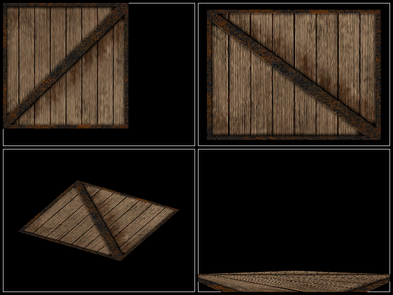

Demonstrating a single scene that is shown in four different viewboxes, each with a different camera.
# todo: the panzoom camera sometimes work, sometimes not. Not sure why.
# we should probably make iterating over children deterministic, so that
# an error like this becomes easier to reproduce ...
import sys
from vispy import app, scene, io
canvas = scene.SceneCanvas(keys='interactive')
canvas.size = 800, 600
canvas.show()
# Create two ViewBoxes, place side-by-side
vb1 = scene.widgets.ViewBox(border_color='white', parent=canvas.scene)
vb2 = scene.widgets.ViewBox(border_color='white', parent=canvas.scene)
vb3 = scene.widgets.ViewBox(border_color='white', parent=canvas.scene)
vb4 = scene.widgets.ViewBox(border_color='white', parent=canvas.scene)
scenes = vb1.scene, vb2.scene, vb3.scene, vb4.scene
# Put viewboxes in a grid
grid = canvas.central_widget.add_grid()
grid.padding = 6
grid.add_widget(vb1, 0, 0)
grid.add_widget(vb2, 0, 1)
grid.add_widget(vb3, 1, 0)
grid.add_widget(vb4, 1, 1)
# Create some visuals to show
# AK: Ideally, we could just create one visual that is present in all
# scenes, but that results in flicker for the PanZoomCamera, I suspect
# due to errors in transform caching.
im1 = io.load_crate().astype('float32') / 255
#image1 = scene.visuals.Image(im1, grid=(20, 20), parent=scenes)
for par in scenes:
image = scene.visuals.Image(im1, grid=(20, 20), parent=par)
#vol1 = np.load(io.load_data_file('volume/stent.npz'))['arr_0']
#volume1 = scene.visuals.Volume(vol1, parent=scenes)
#volume1.transform = scene.STTransform(translate=(0, 0, 10))
# Assign cameras
vb1.camera = scene.BaseCamera()
vb2.camera = scene.PanZoomCamera()
vb3.camera = scene.TurntableCamera()
vb4.camera = scene.FlyCamera()
# If True, show a cuboid at each camera
if False:
cube = scene.visuals.Cube((3, 3, 5))
cube.transform = scene.STTransform(translate=(0, 0, 6))
for vb in (vb1, vb2, vb3, vb4):
vb.camera.parents = scenes
cube.add_parent(vb.camera)
if __name__ == '__main__':
if sys.flags.interactive != 1:
app.run()